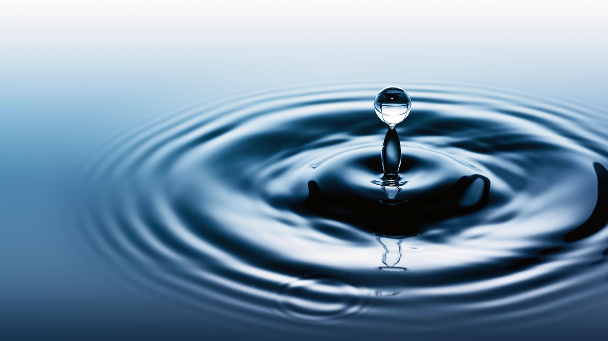

Water Resources

It takes about 200 liters to produce the beans for one cup of coffee.
Vegetables contain a whopping 96% water. Other great options are zucchini, with 95% water, and watermelon with around 92% water.
All around the world, people use water to make tea. From chai in India to earl grey tea in Great Britain.
If you drink two liters of water a day, you’ll drink about 60,000 liters of water in our life since the average life expectancy is around 79 years.
In plants, water defies gravity.